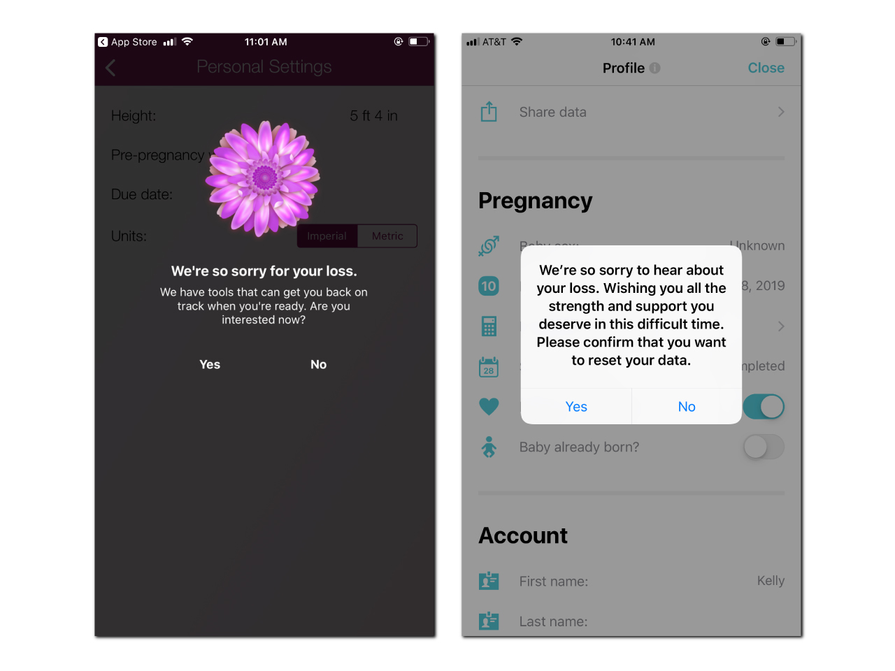
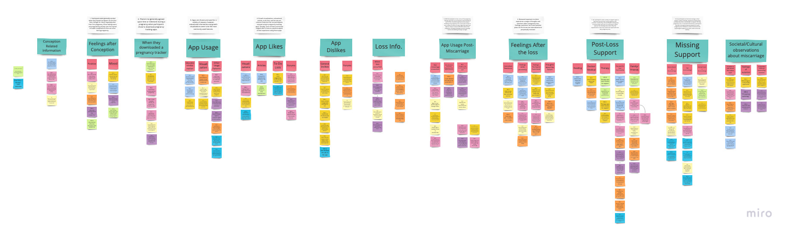
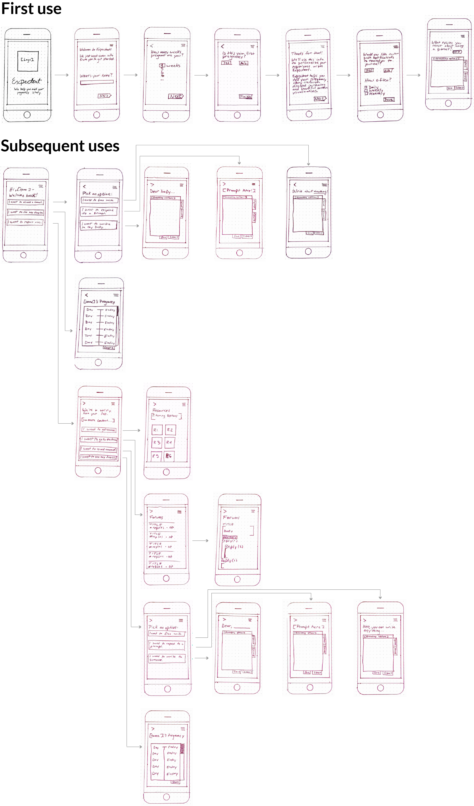
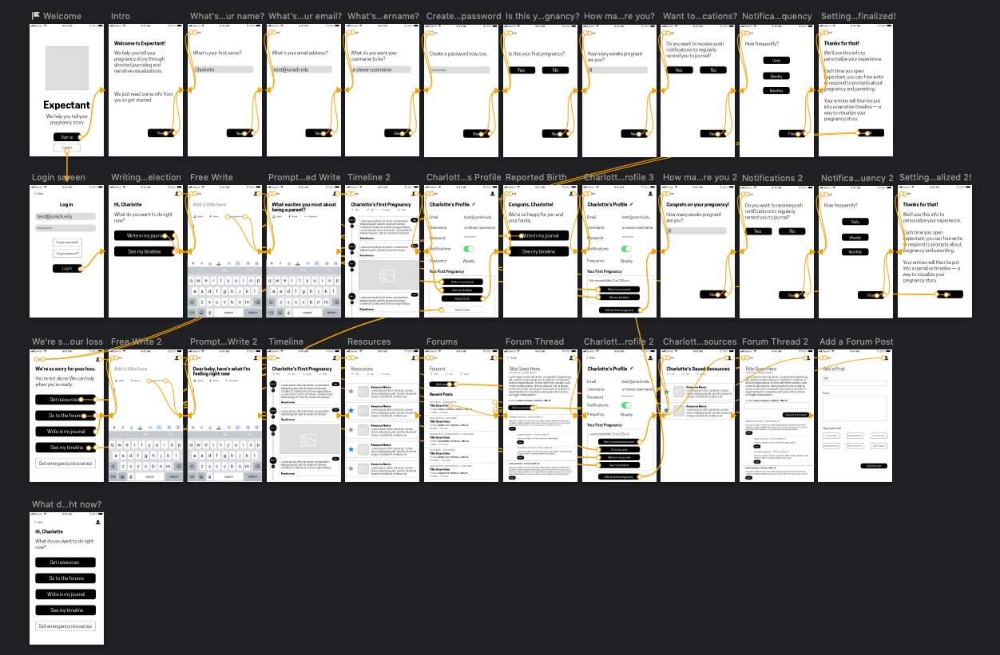

Expectant
Case Study
A product that treats early pregnancy loss in a dignified way
At a Glance
The Pursuit
I set out with a group of my peers to find a solution to a challenging problem: why do most pregnancy tracking applications fail to consider early pregnancy loss in their experiences. Twenty percent of pregnancies end in early loss, but the problem is that many current apps don’t treat this possibility gracefully or even at all.
Services:
- User Interviews
- Secondary Research
- Literature Review
- Competitive Analysis
- Survey Creation/Distribution/Analysis
- User Testing
- Interface Design
- Style Guide/Visual System Creation
Our Problem: Early Pregnancy Loss is not Currently Designed for in Pregnancy-Tracking Apps
According to the Center for Disease Control’s “National Vital Statistics Report”, almost 4 million (3,945,875) live births were registered in the U.S. in 2016. Generally, about 10-20% of known pregnancies don’t result in live births, instead ending unexpectedly early, in either miscarriage or stillbirth.
In a 2018 Mashable article, Olga Massov wrote that, after experiencing a miscarriage, that [“i]t wasn’t until I logged onto the app’s website on my computer that I discovered there was no option to label a pregnancy ending in a miscarriage. I could either delete the pregnancy entirely or let the app believe I was still pregnant.” Another article, in The Atlantic, recounts the experiences multiple women have had after experiencing pregnancy loss: “she [Cindy Jenkins] found the process of getting rid of her Glow account to be cumbersome, which only amplified her pain. ‘It should have been easier to figure out how to ‘report a loss,’ which is what they call it,’ Jenkins told me.”
Our Goal: Support Pregnant Women in a Realistic, Dignified Way
With this project, we aimed to pick up where most pregnancy-tracking apps fail: handling cases of early or unexpected pregnancy loss in dignified ways—not treating them as edge or stress cases, but as normal, expected use cases—and designing a solution that thoughtfully facilitates or provides relevant support, space, and healing.
We anticipated that this project would impact mothers who have experienced pregnancy loss. This experience is life-altering for all people involved—one of emotional turbulence, uncertainty, and confusion—and so the project's main focus was on helping them through this experience, easing digital stressors and facilitating or beginning the healing process.
Field Research/Design Methodology
Our problem was already well framed for us by the various secondary research we had performed in the area of post early pregnancy loss support. However, we wanted to ensure that this problem topic domain was one where we could make an impact. With that in mind, we first set out to determine if a solution to our identified problem was something that women felt was needed. Once we had gathered data from a field research study, we could begin forming a solution to the current lack of support for those who have experienced early pregnancy loss.
COMPETITIVE FEATURE ANALYSIS
Conducting a feature analysis of the 10 most popular pregnancy-tracking and fertility/period-tracking apps across the App and Google Play stores was our initial method of gauging the landscape of our eventual design solution. Apps included in this analysis were extensively studied, with our group taking note of features common to many of them. An additional priority of our feature analysis was to understand how, or if, each of these apps handled pregnancy loss.
What resulted were findings that showed that these apps consistently omit support for those who have experienced a pregnancy loss. While some apps provide a brief sympathetic message to the user, in the worst of cases users are unable to report a loss and are forced to either abandon or discard the app entirely.
Overall, our feature analysis showed our team that the common pregnancy outcome of an early pregnancy loss was not well addressed by available products. If a user had the option of logging an early pregnancy loss, all but one app we encountered did no more than attempt to redirect the user into a fertility tracking app or prompt them to come back to the app once they were ready to become pregnant again.
SECONDARY LITERATURE REVIEW
Making use of both Google Scholar and the U-M Library database search tools, our group explored PubMed, PubMed Central, SAGE, and Taylor & Francis databases with search terms “miscarriage”, “stillbirth”, “perinatal loss”, “pregnancy loss”, “pregnancy loss + grief”, and “pregnancy loss + support”. We found 15 articles connected to pregnancy, pregnancy loss (miscarriage and stillbirth), and support after pregnancy loss.
Secondary research taught us a great deal about the unique grief process associated with pregnancy loss. We learned that those experiencing early pregnancy loss report a symbolic and often multifaceted nature of this type of loss. Our searches additionally yielded industry best practices for supporting people experiencing this type of loss, including: memorializing the loss, receiving emotional validation from professionals, getting information from medical professionals, having reliable contact with medical professionals, receiving emotional validation from peers, and making meaning of the loss.
Our literature review went on to inform our subsequent research methods as well as our design, and taking the time to observe and take note of what has been done up to this point in the area of early pregnancy loss was key for us to move forward confidently with Expectant.
SURVEY
We crafted a survey to both gather data and recruit participants for the interviews were were later planning on conducting. Our goals for this survey were to learn what respondents found useful about pregnancy-tracking applications, what information participants most relied on pregnancy-tracking apps for, and how respondents who experienced pregnancy loss found support.
We created our survey through Qualtrics and distributed the survey via social media platforms (Facebook and Twitter), a school-wide listserv, and /r/miscarriage on Reddit. Our target was 30-40 responses, but we surpassed that goal, gathering 99 completed surveys from respondents in five different countries. Our group opted to analyze the data of the 89 respondents in the United States in order to avoid potential skewing due to any possible cultural biases or differences.
Our survey was comprised of questions with categorical answers, and because of this we analyzed our respondents’ answers via frequency tables, bar charts, and cross tabulation.
Most of our respondents were between the ages of 25-34 and 98.9% indicated being pregnant in their lifetime. Of those who indicated a pregnancy, 94.3% reported using a pregnancy-tracking app. The most used features of these apps were growth-tracking visualizations, symptom/health trackers, and educational articles.
Of those who used a pregnancy-tracking app, the majority (92.77%) rated their app as at least somewhat helpful. This finding helped us narrow our scope: it would be unnecessary for us to design revamped versions of features that are currently well-liked, such as growth-tracking visualizations.
INTERVIEWS
During the period of February 4, 2019 and February 15, 2019, we spoke with eight people who fit into two groups we were interested in:
- respondents who had used pregnancy-tracking apps and had experienced at least one unexpected pregnancy loss
- respondents who had used pregnancy-tracking apps while pregnant but hadn’t experienced an unexpected pregnancy loss
We conducted interviews by various remote interview methods (phone, Bluejeans, or Google Hangouts) and used a semi-structured protocol to frame the conversations. Once complete, our interviews were transcribed using Otter.ai, and we then wrote down detailed observations from our transcripts.
We constructed a digital affinity wall to draw connections between the experiences, thoughts, feelings, and opinions of interview participants. Once we had completed interviews and added notes to the affinity wall, we drew thematic connections between our notes to support various significant findings. Later, we used those findings to inform our design requirements.
Our interviews afforded us key insights about our target user population:
- Participants were generally excited when they became pregnant for the first time. However, for many, these feelings were accompanied by anxiety over the various health issues that can occur during pregnancy.
- There was no generally agreed-upon time or milestone during a pregnancy when participants chose to download pregnancy-tracking apps.
- Apps were chosen for various reasons. Regardless of this, educational articles and growth-tracking visualizations seemed to be the most commonly used features.
- Excepting one, none of the pregnancy-tracking apps that participants used supported pregnancy loss as part of the standard experience.
- Participants who experienced unexpected pregnancy loss were forced to use a variety of means to sever digital ties with pregnancy tracking apps. The same was true of eliminating notifications about their pregnancy, including fumbling around in settings and menus and deleting the apps outright.
- A range of thoughts and emotions was experienced by our participants after a pregnancy loss. Feelings, questions, and now-canceled plans were internalized and consistently revisited.
- Participants used various support types for processing their early pregnancy loss. All felt shortcomings in their support systems.
REQUIREMENTS
Pulling together data from these four research methods we crafted UX requirements for Expectant and prioritized each according to our findings. Our prioritization hierarchy included “must have”, “should have”, or “nice to have”, in decreasing order of importance.
- Must have: Create a separate space for healing after a pregnancy loss – avoid pushing users immediately back into a fertility- or period-tracking solution.
- Must have: Provide ways to users to make sense of their loss.
- Must have: Avoid “magical thinking” – don’t avoid communicating the hard truths about the prevalence and pain of pregnancy loss, in addition to other complications associated with pregnancy.
- Must have: Don’t “reinvent the wheel” – don’t include features that are currently well-established in popular pregnancy-, period-, and fertility-tracking periods.
- Should have: Provide actionable advice that helps users address the psychological, emotional, and mental effects of pregnancy loss.
- Should have: Provide educational articles and other tools that help users stay informed about the physical effects of pregnancy loss.
- Should have: Provide ways to communicate with others who’ve experienced pregnancy loss, whether in a user’s social circle or not.
- Should have: Provide ways for users to memorialize their loss.
- Nice to have: Use dignified, clear, validating language – no niceties.
DESIGN CONCEPT
With user needs and research driving what our eventual solution should contain, our team began ideation. We each drew what we thought a potential successful implementation would look like. After exploring the pros and cons of each, we arrived at a design concept that was a combination of the best of our ideas.
That concept, Expectant, helps users tell their pregnancy stories through directed journaling and narrative visualization. Expectant is an application. This is mainly because our reasons for exploring this project space was to address the often unconsidered experience of pregnancy loss for users of pregnancy-tracking apps. As our users were already users of these apps, an app fell in line with the kind of product that we felt would make the biggest positive impact with them.
Expectant could be used by anyone at any point during their pregnancy. During onboarding, a user is asked
- Their first name
- How many weeks pregnant they are
- If it’s their first pregnancy (and if not, which number it is)
- Whether they’d prefer to receive regular push notifications as reminders to journal (and if so, how frequently)
Once onboarded, users can engage in directed journaling. They’re given prompts about what they’re most excited about for their child, what parenthood means to them, and others. To respond, users can type directly into the app; upload documents, audio, video, or photos; or natively record audio or video or take photos. (They can save, edit, or delete responses at any time, too.)
Each subsequent use of the app will ask the user whether they would like to
- Record a “moment” – This could consist of free-writing, responding to a prompt, or writing to their baby.
- Review their timeline – This will display a visualization of the user’s recorded moments throughout their pregnancy, in whatever format they’ve used (text, audio, video, photo, etc.). This will be, for users, a narrative thread of what they’ve experienced throughout their pregnancy that they can share with others.
- Report a loss In this case, Expectant will offer users tailored resources and access to community forums, in addition to their timeline and to opportunities to free-write, respond to loss-specific prompts, and write to someone (whether their lost baby, their partner, etc.)
LOW FIDELITY PROTOTYPE
Our group decided to use paper prototypes to validate our initial design choices. Once we had created these prototypes and tested them, we used what worked from those initial semi-structured tests to inform our next iteration of Expectant.
MEDIUM FIDELITY PROTOTYPE
Resulting from user feedback from our initial, low fidelity prototype was a medium fidelity prototype that we created in Sketch for the purposes of continued usability testing and refinement of our product. We wanted this prototype to afford users the ability to click through, but also still remain relatively lower in fidelity while we continued to validate design choices.
NEXT STEPS
- Voice & Tone and Style Guide Creation
- Usability Testing
- Refinement